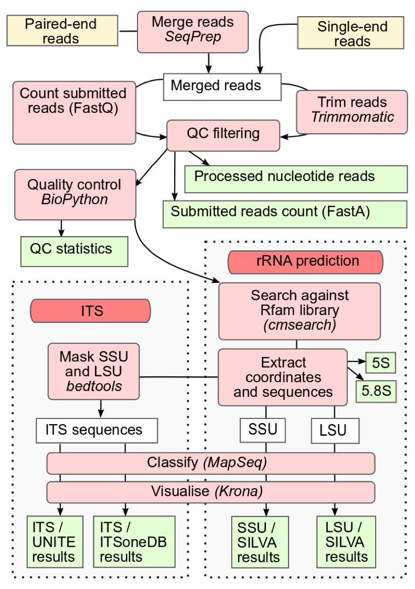
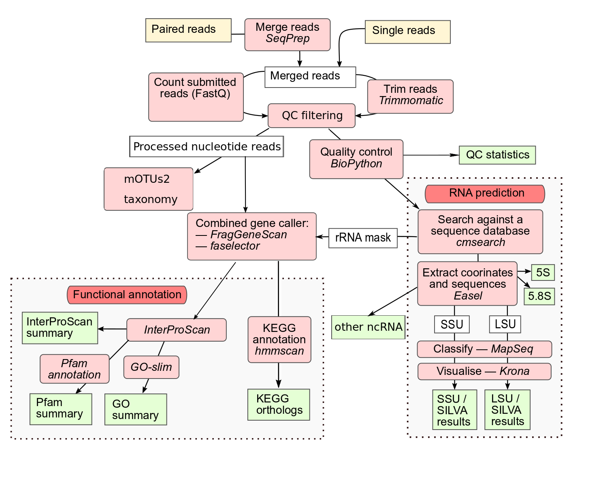
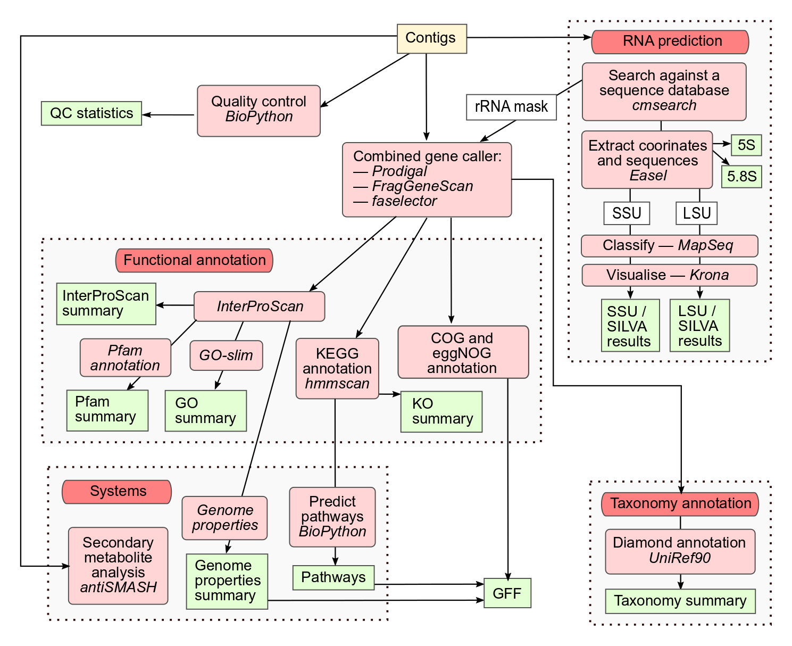

Analysis pipeline v5.0
Overview
The previous MGnify analysis service (version 5.0) offered specialised workflows for three different data types: amplicon, raw metagenomic/metatranscriptomic reads, and assembly. Each workflow was defined in common workflow language (CWL). (MGnify v5.0 CWL repository) All databases are available from an FTP link
The software and databases used for the various processing steps and analyses are listed in the following table.
Pipeline version 5.0 was superceeded by version 6.0, but previously-run version 5.0 analyses continue to be available via MGnify’s API, Website and downloadable from the Transfer Services area.
Software, Databases and Versions used by MGnify:
| Tool/Database | Version | Purpose | Amplicon | Raw reads | Assemblies |
|---|---|---|---|---|---|
| SeqPrep | 1.2 | Merging paired end reads | Yes | Yes | |
| Trimmomatic | 0.36 | Quality controlled | Yes | Yes | |
| Biopython | 1.74 | Quality controlled | Yes | Yes | Yes |
| bedtools | 2.28.0 | SSU/LSU rRNA masking for ITS | Yes | ||
| pre-assembled | 0.45h | Sequence extraction | Yes | Yes | Yes |
| Infernal | 1.1.2 | RNA predictions | Yes | Yes | Yes |
| Rfam | 13.0 | Identification of SSU/LSU rRNA and other ncRNAs | Yes | Yes | Yes |
| MAPseq | 1.2.3 | Taxonomic assignment of SSU/LSU rRNA and ITS | Yes | Yes | Yes |
| Kronatools | 2.7.1 | Visualisation of taxonomic analyses | Yes | Yes | Yes |
| biom-format | 2.1.6 | Formatting of taxonomic analyses | Yes | Yes | Yes |
| mOTUs2 | 2.5.1 | Phylogenetic marker gene based taxonomic profiling | Yes | ||
| FragGeneScan | 1.20 | Protein coding sequence prediction | Yes | Yes | |
| Prodigal | 2.6.3 | Protein coding sequence prediction | Yes | ||
| InterProScan | 75.0 | Protein function annotation with separate Pfam results | Yes | Yes | |
| GO terms in-house scripts | N/A | Assign gene ontology terms | Yes | Yes | |
| eggNOG-mapper | 4.5.1 | Protein function annotation | Yes | ||
| eggNOG-mapper | 1.0.3 | Protein function annotation | Yes | ||
| HMMER | 3.2.1 | KEGG Ortholog prediction | Yes | Yes | |
| KOfam - a modified version based on KEGG 90.0 | 2019-04-06 | KEGG Ortholog prediction | Yes | Yes | |
| KEGG and in-house descriptions | 90.0 | KEGG pathway predictions | Yes | ||
| Genome Properties | 2.0.1 | Systems and pathways annotation | Yes | ||
| antiSMASH | 4.2.0 | Secondary metabolite biosynthetic gene cluster annotation | Yes | ||
| DIAMOND | 0.9.25.126 | Protein sequence-based taxonomic analysis | Yes | ||
| SILVA release | 132 | SSU/LSU rRNA taxonomic database | Yes | Yes | Yes |
| ITSoneDB | 1.138 | ITS1 taxonomic database | Yes | ||
| UNITE | 8.0 | ITS taxonomic database | Yes | ||
| UniRef90 | 2019_11 | Protein sequence-based taxonomic analysis | Yes | ||
| metaSPAdes | 3.13 | Assembly of raw reads (available on request) | N/A | N/A | N/A |
Amplicon analysis pipeline
Amplicon reads are merged with SeqPrep (where appropriate) and filtered with Trimmomatic to trim sequence regions with an average Phred 33 quality score of less than 15 in a sliding window of 4 base pairs. This is followed by removal of reads less than 100bp in length. An additional Biopython filtering step removes reads with more than 10% ambiguous bases. Infernal (running in hmm-only mode) using a library of ribosomal RNA hidden Markov models from Rfam is run to identify large and small subunit ribosomal ribonucleic acid (LSU and SSU rRNA) genes, using families found in the following clans: CL00111 (SSU) and CL00112 (LSU). Theses undergo taxonomic classification using the SILVA database in conjunction with MAPSeq which offers fast and accurate classification of reads, and provides corresponding confidence scores for assignment at each taxonomic level.
MGnify can also provide analysis of ITS (internal transcribed spacer) amplicons. ITS1 and ITS2 reside between the LSU and SSU genes and can be targeted for accurate classification of eukaryotic organisms. ITS taxonomy is assigned by MAPseq using two reference databases: ITSoneDB containing ITS1 sequences and UNITE containing ITS1 and ITS2 sequences. The SSU and LSU regions are masked using Rfam, as described above, prior to ITS classification, minimising cross reactivity.

Raw reads analysis pipeline
Metagenomic and metatranscriptomic raw reads undergo merging, quality control and SSU/LSU based taxonomic analysis, as described for the amplicon pipeline above. Additional non-coding RNAs (ncRNAs) are identified with Infernal, using families from the following Rfam clans: CL00001 (tRNA), CL00002 (RNAse) and CL00003 (SRP). Supplementary phylogenetic classification based on marker gene profiling, is performed using mOTUs2 on the quality controlled reads.
For functional analysis, the sequence regions encoding rRNAs are masked, and FragGeneScan is used to predict coding sequences (pCDS). Coding sequences are assigned protein annotations with InterProScan, using 5 member databases that are able to process large numbers of potentially fragmented sequences (Gene3D, TIGRFAMs, Pfam, PRINTS and PROSITE patterns). Pfam annotations are provided as separate visualisations and downloads. GO terms are extracted from the InterProScan results and grouped according to category (Biological Process, Molecular Function and Cellular Component). GO terms are also summarized using a specialized GO Slim developed for metagenomic data. Finally, protein coding sequences undergo KEGG ortholog annotations using HMMER v3.2.1 and a modified version of KOfam 2019-04-06 (based on KEGG 90.0).

Assembly analysis pipeline
Users can request assembly of their own raw sequencing reads, or publicly available datasets, using the ‘Request analysis’ section of the MGnify home page. Users own raw reads (with host sequences removed) must be archived in ENA before submitting an assembly request. The sequences then undergo quality control, as well as a precautionary additional host contamination removal process (where applicable) with bwa-mem. metaSPAdes is used for assembly of paired end reads and SPAdes for single reads. Alternatively, pre-assembled datasets, including those produced using other assembly algorithms, can be analysed. Quality control for assemblies is based on sequence length, with contigs less than 500 nucleotides removed from the analysis process.
rRNAs are identified and undergo taxonomic analysis as for raw reads above. Sequence regions encoding rRNAs are masked and protein coding sequences are predicted using a combined gene caller that utilises both Prodigal and FragGeneScan. In addition to rRNA-based taxonomic analyses, DIAMOND is used to assign taxonomy to protein sequences, based on the top hit to the UniRef90 database.
Protein function is assigned in the form of InterProScan annotations, GO terms, and KEGG ortholog predictions, as described for the raw reads analysis pipeline above. Additionally, clusters of orthologous groups (COGs) annotations and eggNOG functional descriptions are provided by the eggNOG-mapper tool.
KEGG ortholog annotations are further processed to produce KEGG pathway information, including module presence and completeness. Similarly, InterPro annotations for individual protein sequences are amalgamated to generate Genome Properties (GP), providing inference of higher level pathways and systems that may be present in the dataset. Finally, antiSMASH is used to identify and annotate biosynthetic gene clusters that code for the production of secondary metabolites.

Citation
@online{2026,
author = {, MGnify},
title = {Analysis Pipeline V5.0},
date = {2026-07-03},
url = {https://docs.mgnify.org/src/docs/analysis.html},
langid = {en}
}